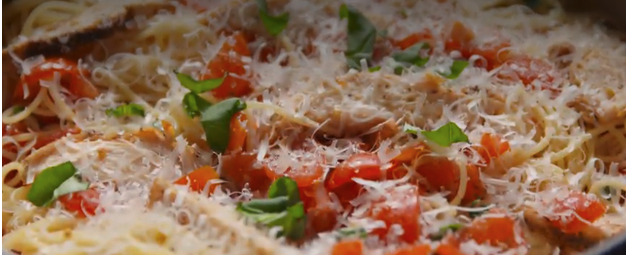

Home
Bruschetta Chicken Pasta

This was a pasta dish I found online when looking for a pasta recipe different from what I usually make. This dish is easy to make, especially on a week night when you don't feel like cooking.
Ingredients
- 1 lb cherry tomatoes, chopped
- 1/4 cup plus 1 tbsp extra-virgin olive oil, divided
- 4 cloves garlic minced
- 1/2 cup torn fresh basil
- freshly ground black pepper
- 1 lb angel hair pasta
- 3/4 lb boneless skinless chicken breasts
- 1 Tbsp italian seasoning
- 1/4 cup freshly grated parmesan
Steps
- In a large bowl, stir together tomatoes, 1/4 cup olive oil, garlic and basil and season generously with salt and pepper. Let sit 15 minutes.
- Meanwhile, bring a large pot of salted water to a boil. Cook angel hair until al dente, 4 minutes. Drain and return to pot.
- In a large skillet over medium-high heat, heat remaining tablespoon olive oil. Add chicken and season with Italian seasoning salt, and pepper. Cook until no longer pink, 10 minutes per side. Let rest 5 minutes, then thinly slice.
- Add tomato mixture and sliced chicken to angel hair and toss until fully combined.
- Top with Parmesan and serve.